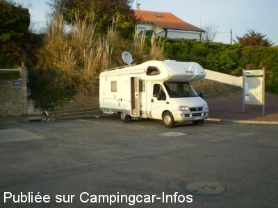
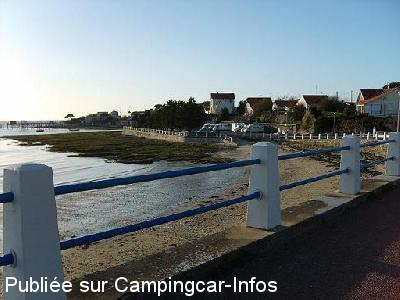
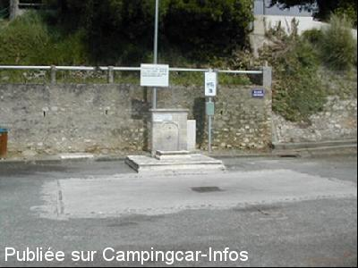
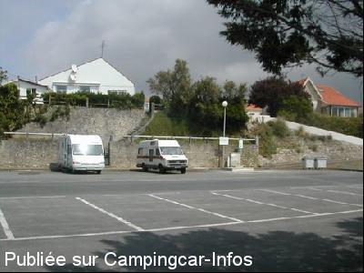

AS = Aire de services uniquement de :
FOURAS [voir les deux derniers commentaires]
(N° 676)
Accès/adresse :
Avenue Philippe Janet
17450 FOURAS
17450 FOURAS
Latitude : (Nord) 45.98173° Décimaux ou 45° 58′ 54′′
Longitude : (Ouest) -1.08696° Décimaux ou -1° 5′ 13′′
Tarif : 2012
Services : 2 €
Jetons à l'office du tourisme
Type de borne : Artisanale
Services :


Commerces
Autres informations :
Tel + 33 (0)546 846 011
http://www.fouras.net/v2/

Le 11/11/2010 par Grecy

Le 10/03/2007 par andresyl

Le 20/05/2003 par patrick.lpr

Le 20/05/2003 par patrick.lpr
de
Romulus41
le 07/05/2016 :
NPA Fab envoi mail
Aire qui n"est plus en service et parking interdit aux véhicules de plus de 2 mètres de hauteur et 5 mètres de long. A retirer ;-)
NPA Fab envoi mail
Aire qui n"est plus en service et parking interdit aux véhicules de plus de 2 mètres de hauteur et 5 mètres de long. A retirer ;-)
de
échange de mails :
le 07/05/2016 :
Moi :
C'est une AS ( uniquement aire de services ) le stationnement est interdit depuis 2012 ( lire les autres commentaires des fiches ), par contre pouvez vous nous confirmer que la borne de services n'existe plus ?
Romuald Guillard ( detection.com@gmail.com )
Oui plus de borne de service c'est pour cette raison que je vous envoie ce message. Un panneau l'annonce en renvoyant à l'aire de l'espérance qui est à proximité.
Moi :
C'est une AS ( uniquement aire de services ) le stationnement est interdit depuis 2012 ( lire les autres commentaires des fiches ), par contre pouvez vous nous confirmer que la borne de services n'existe plus ?
Romuald Guillard ( detection.com@gmail.com )
Oui plus de borne de service c'est pour cette raison que je vous envoie ce message. Un panneau l'annonce en renvoyant à l'aire de l'espérance qui est à proximité.
de
Christian
le 09/07/2012 :
ATTENTION !! Aire fermée au stationnement depuis le 2 Juillet 2012, borne encore en service, vous êtes invités à aller vers la nouvelle aire aménagée 500 m plus loin en face du camping municipal Espérance.
Dommage car plus éloigné de la ville
ATTENTION !! Aire fermée au stationnement depuis le 2 Juillet 2012, borne encore en service, vous êtes invités à aller vers la nouvelle aire aménagée 500 m plus loin en face du camping municipal Espérance.
Dommage car plus éloigné de la ville
de
O.K 85
le 13/06/2011 :
Salut à tous, rien de neuf à fouras sur les aires de services sinon que rien n'a changé depuis les derniers commentaires. Si vous voulez passer une bonne nuit pour quelques petits euros de plus, direction le camping de l'espérance (indiqué et fléché dès l'entrée de la commune). Vue sur l'ile madame, fort boyard, chemin piéton ou vélo dans le marais à 200 m du camping ,accès direct à la plage ; bref simple et convivial. Bonne route à tous
Salut à tous, rien de neuf à fouras sur les aires de services sinon que rien n'a changé depuis les derniers commentaires. Si vous voulez passer une bonne nuit pour quelques petits euros de plus, direction le camping de l'espérance (indiqué et fléché dès l'entrée de la commune). Vue sur l'ile madame, fort boyard, chemin piéton ou vélo dans le marais à 200 m du camping ,accès direct à la plage ; bref simple et convivial. Bonne route à tous
de
kiki6
le 08/04/2008 :
Avons voulu passé l'après midi sur ce parking le long de la route ( dangereux avec enfants) mais juste pour cela payer 6 euros!!!! sympa aussi le panneau interdisant le linge,les tables, les chaises, le déballage etc..Même si effectivement nous évitons le déballage, on se sent bien accueilli.
A la fin, quand même est inscrit: bon séjour.
Avons voulu passé l'après midi sur ce parking le long de la route ( dangereux avec enfants) mais juste pour cela payer 6 euros!!!! sympa aussi le panneau interdisant le linge,les tables, les chaises, le déballage etc..Même si effectivement nous évitons le déballage, on se sent bien accueilli.
A la fin, quand même est inscrit: bon séjour.
de
Les chachas 24
le 07/09/2007 :
Nous nous sommes stationnés à plusieurs reprises sur l'aire située sur la route qui conduit à la pointe de la fumée. L'endroit est calme la nuit. Il est facile ensuite de se rendre à l'embarcadère à pied ou à vélo, pour prendre le bac qui conduit à l'ile d'AIX.
Nous nous sommes stationnés à plusieurs reprises sur l'aire située sur la route qui conduit à la pointe de la fumée. L'endroit est calme la nuit. Il est facile ensuite de se rendre à l'embarcadère à pied ou à vélo, pour prendre le bac qui conduit à l'ile d'AIX.
de
niceday
le 29/06/2007 :
la municipalite de fouras a decide de mettre un horodateur sur les 3 aires le tarif est 6 ou 6,50 euro la nuitee uniquement pour le parking, merci monsieur le maire!
la municipalite de fouras a decide de mettre un horodateur sur les 3 aires le tarif est 6 ou 6,50 euro la nuitee uniquement pour le parking, merci monsieur le maire!
de
Jean-pierre
le 19/05/2006 :
18/5/2006
De passage a fouras par hasard , en effet aire NORD transformée en parking , par contre en continuant vers LA FUMEE sur la gauche une aire destinée au CC est disponible pour 48h mais sans service mais par contre trés calme, les commerces sont a 1 km , emplacement idéal pour début de randos a pied ou en vélo .
18/5/2006
De passage a fouras par hasard , en effet aire NORD transformée en parking , par contre en continuant vers LA FUMEE sur la gauche une aire destinée au CC est disponible pour 48h mais sans service mais par contre trés calme, les commerces sont a 1 km , emplacement idéal pour début de randos a pied ou en vélo .
de
Cévennol
le 21/04/2004 :
Nous avons passé une nuit sur l'aire place Jean Moulin.
On redoutait le bruit car le stationnement se fait le long de la route. Finalement, passé 20h, l'endroit est très calme (peut-être parce que l'on était en Avril, donc hors saison?).
Les 12 emplacements étaient pris, prévoir donc d'y arriver assez tôt pour ne pas avoir de mauvaise surprise, l'endroit a l'air pas mal recherché.
Le système de jeton pour l'eau à aller acheter à l'office du tourisme ou chez certains commerçants n'est pas très pratique et revient plutôt cher.
Daniel.
Nous avons passé une nuit sur l'aire place Jean Moulin.
On redoutait le bruit car le stationnement se fait le long de la route. Finalement, passé 20h, l'endroit est très calme (peut-être parce que l'on était en Avril, donc hors saison?).
Les 12 emplacements étaient pris, prévoir donc d'y arriver assez tôt pour ne pas avoir de mauvaise surprise, l'endroit a l'air pas mal recherché.
Le système de jeton pour l'eau à aller acheter à l'office du tourisme ou chez certains commerçants n'est pas très pratique et revient plutôt cher.
Daniel.
de
martine P.
le 21/03/2003 :
18/04/2003 les parkings et aires de services sont tres bien indiques sur le plan donne par l office du tourisme
18/04/2003 les parkings et aires de services sont tres bien indiques sur le plan donne par l office du tourisme
de
le 28/08/2001 :
Aire de repos à éviter. Bruyante cause proximité des Sanitaires du Camping voisin. Proprété douteuse des WC publiques. Réveil à 8 heures du matin pour régler le parking 40 F pour 24 H. Ok pour faire le ravitaillement sinon pour passer la nuit, préférer le parking près du Phare Chassiron.
Aire de repos à éviter. Bruyante cause proximité des Sanitaires du Camping voisin. Proprété douteuse des WC publiques. Réveil à 8 heures du matin pour régler le parking 40 F pour 24 H. Ok pour faire le ravitaillement sinon pour passer la nuit, préférer le parking près du Phare Chassiron.